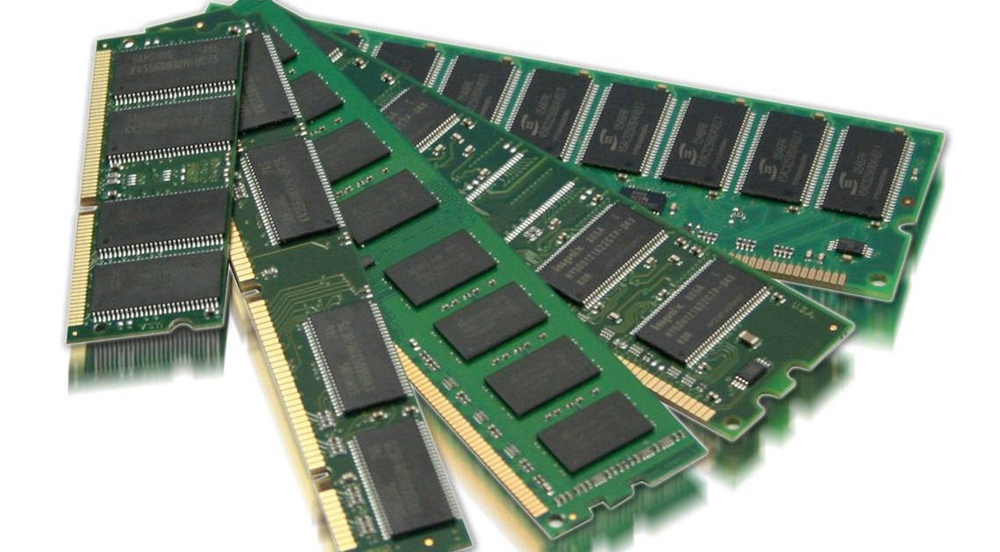

Glossary: Learn about PC Building's most important terms. Click the titles to see the current prices and selection of each part from pcpartpicker.com!
CPU
Also known as the processor, the CPU (or Computer Processing Unit) is the heart or brain of the machine. The part perhaps most responsible for a computer's speed and responsiveness, it goes directly into the motherboard in a specially marked socket. The top manufacturers of CPUs are Intel and AMD. Your motherboard's socket must match the processor's socket type! As of right now, I'd recommend an AMD processor, specifically their Ryzen 5 5000-series CPUs (which are actually in stock!).

Motherboard
If the CPU is the brain, the motherboard is the nervous system of your machine. This is where pretty much everything plugs into! Different motherboards have different features and ports, but the design is fundamentally the same no matter what brand you get. Motherboards feature different "chipsets," which are basically versions of a motherboard that have different features. New chipsets come out every year or two. If you get a Ryzen 5 5000-series CPU, I'd recommend a B550 or X570 chipset board from a manufacturer like Asus, MSI, ASRock or Gigabyte.

RAM
RAM, or Random Access Memory, is your computer's sort term memory, and it's extremely important for journalistic tasks like editing on Photoshop or Premier. I'd recommend 16GB of DDR4-3200. That's less confusing than it looks. DDR4 is the current "generation" for RAM, with DDR5 expected to become the standard in 2022. The "3200" is just the RAM's speed, in this case, 3200 MHz. The faster the RAM (the bigger the number!) the faster your computer will be able to manage and sort through RAM intensive tasks like Adobe programs. It plugs directly into the motherboard, very close to your CPU.
